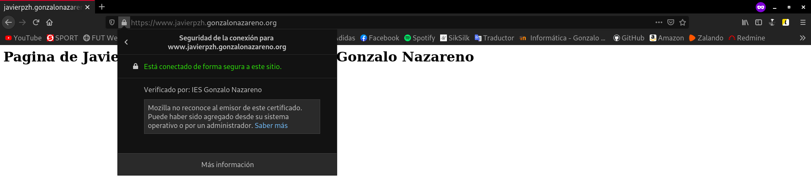

En este post vamos a configurar de forma adecuada el protocolo HTTPs en nuestro servidor web para nuestra aplicaciones web. Para ello vamos a emitir un certificado wildcard en la entidad certificadora Gonzalo Nazareno.
Este servidor web, fue creado en el post Servidores OpenStack: DNS, Web y Base de Datos, en el apartado Servidor Web.
Lo primero que debemos hacer es solicitar el certificado wildcard.
(Este certificado ya lo creé anteriormente para el uso del protocolo LDAPs, puedes ver el post aquí y por ello el proceso lo llevo a cabo en la máquina Freston. La clave privada y los certificados .crt los he copiado a la máquina Quijote.)
Para crear este certificado, vamos a crear una clave privada de 4096 bits, para ello vamos a utilizar openssl. Vamos a guardar esta clave en el directorio /etc/ssl/private/. Para crear esta clave privada empleamos el siguiente comando:
root@freston:~# openssl genrsa 4096 > /etc/ssl/private/freston.key Generating RSA private key, 4096 bit long modulus (2 primes) .........................................++++ ...........................................................................................................................++++ e is 65537 (0x010001)
Debemos cambiarle los permisos a la clave privada a 400, así únicamente el propietario podrá leer el contenido. Para ello, haremos uso de la herramienta chmod:
root@freston:/etc/ssl/private# ls -l total 4 -rw-r--r-- 1 root root 3243 Dec 18 08:59 freston.key root@freston:/etc/ssl/private# chmod 400 /etc/ssl/private/freston.key root@freston:/etc/ssl/private# ls -l total 4 -r-------- 1 root root 3243 Dec 18 08:59 freston.key
Lo siguiente sería generar una solicitud de firma de certificado, es decir, un fichero .csr, que posteriormente enviaremos a la entidad del Gonzalo Nazareno para que nos lo firmen.
Para generar nuestro archivo .csr:
root@freston:~# openssl req -new -key /etc/ssl/private/freston.key -out /root/wildcard.csr You are about to be asked to enter information that will be incorporated into your certificate request. What you are about to enter is what is called a Distinguished Name or a DN. There are quite a few fields but you can leave some blank For some fields there will be a default value, If you enter '.', the field will be left blank. ----- Country Name (2 letter code) [AU]:ES State or Province Name (full name) [Some-State]:Sevilla Locality Name (eg, city) []:Dos Hermanas Organization Name (eg, company) [Internet Widgits Pty Ltd]:IES Gonzalo Nazareno Organizational Unit Name (eg, section) []:Informatica Common Name (e.g. server FQDN or YOUR name) []:*.javierpzh.gonzalonazareno.org Email Address []:javierperezhidalgo01@gmail.com Please enter the following 'extra' attributes to be sent with your certificate request A challenge password []: An optional company name []: root@freston:~# ls wildcard.csr
Como Freston es una instancia del cloud, voy a pasarme este fichero wildcard.csr a mi máquina anfitriona para enviárselo a la entidad certificadora, que en este caso es el Gonzalo Nazareno.
Si quieres entender mejor la estructura del escenario donde estamos trabajando puedes echarle un vistazo a este post, Modificación del escenario de trabajo en OpenStack.
Por tanto, pasaré este archivo a mi equipo mediante scp.
Ya explicado el proceso de como crear un certificado de estas características, y poseer el certificado firmado por la entidad certificadora, lo pasamos a Quijote. También hemos tenido que descargar el certificado de la entidad Gonzalo Nazareno. Por tanto lo vamos a mover también a Quijote.
[centos@quijote ~]$ ls freston.key gonzalonazareno.crt wildcard.crt
Es importante que todos los archivos, posean a root como usuario y grupo propietario, por tanto le cambio el propietario y el grupo. Y la clave privada, como hemos visto antes, debe tener permisos 400:
[centos@quijote ~]$ sudo chown -R root:root wildcard.crt [centos@quijote ~]$ sudo chown -R root:root gonzalonazareno.crt [centos@quijote ~]$ sudo chown -R root:root freston.key [centos@quijote ~]$ sudo chmod 400 freston.key
Aquí podemos ver el resultado:
[centos@quijote ~]$ ls -l total 20 -r--------. 1 root root 3243 Jan 11 20:14 freston.key -rw-r--r--. 1 root root 3634 Jan 11 20:34 gonzalonazareno.crt -rw-r-xr--. 1 root root 10119 Jan 11 20:35 wildcard.crt
Los certificados wildcard.crt y gonzalonazareno.crt los vamos a mover a la ruta /etc/pki/tls/certs/ y la clave privada freston.key a la ruta /etc/pki/tls/private/:
[centos@quijote ~]$ sudo mv gonzalonazareno.crt /etc/pki/tls/certs/ [centos@quijote ~]$ sudo mv wildcard.crt /etc/pki/tls/certs/ [centos@quijote ~]$ sudo mv freston.key /etc/pki/tls/private/
En este punto, vamos a pasar con la configuración del protocolo HTTPs, para ello es necesario tener instalado el módulo mod_ssl. Lo instalamos:
dnf install mod_ssl -y
Para forzar que se acceda a la página a través del protocolo HTTPs, vamos a añadir al fichero de configuración de nuestro virtualhost, es decir, javierpzh.gonzalonazareno.conf la siguiente línea:
Redirect / https://www.javierpzh.gonzalonazareno.org
Hecho esto, nos faltaría crear el virtualhost que defina la web con HTTPs. En mi caso recibirá el nombre de javierpzh.gonzalonazareno.https.conf y su contenido será el siguiente:
<\VirtualHost *:443\>
ServerName www.javierpzh.gonzalonazareno.org
DocumentRoot /var/www/iesgn
ErrorLog /var/www/iesgn/log/error.log
CustomLog /var/www/iesgn/log/requests.log combined
<\Proxy "unix:/run/php-fpm/www.sock|fcgi://php-fpm"\>
ProxySet disablereuse=off
<\/Proxy\>
<\FilesMatch \.php$\>
SetHandler proxy:fcgi://php-fpm
<\/FilesMatch\>
SSLEngine on
SSLCertificateFile /etc/pki/tls/certs/wildcard.crt
SSLCertificateKeyFile /etc/pki/tls/private/freston.key
<\/VirtualHost\>
Atención: a esta configuración hay que eliminarle los carácteres \, que he tenido que introducir para escapar los carácteres siguientes, así que en caso de querer copiar la configuración, debemos tener en cuenta esto.
Habilitamos el nuevo virtualhost creando un enlace simbólico hacia la ruta /etc/httpd/sites-enabled.
[root@quijote sites-availables]# ln -s /etc/httpd/sites-availables/javierpzh.gonzalonazareno.https.conf /etc/httpd/sites-enabled/
Por último, vamos a reiniciar nuestro servidor web para que se apliquen los nuevos cambios:
systemctl restart httpd
Vamos a crear la regla necesaria para hacer DNAT. La regla debe estar en Dulcinea ya que es la máquina que posea conexión hacia el exterior, y es la siguiente:
iptables -t nat -A PREROUTING -p tcp --dport 443 -i eth0 -j DNAT --to 10.0.2.6:443
Esta regla, lo que hace, es redirigir el tráfico que proviene desde la interfaz eth0 y su destino es el puerto 443, a la dirección 10.0.2.6:443, es decir, la IP de Quijote y el puerto 443 de dicha máquina, donde se encontrará nuestro servidor web.
Importante: es muy recomendable instalar el paquete iptables-persistent, ya que esto hará que en cada arranque del sistema las reglas que hemos configurado se levanten automáticamente, siempre y cuando las guardemos en el fichero /etc/iptables/rules.v4. Por tanto vamos a guardar esta regla para que se levente en cada inicio:
iptables-save > /etc/iptables/rules.v4
Por último, para poder utilizar el protocolo HTTPs, debemos tener instalado en nuestro navegador el certificado firmado por la CA, en mi caso, tengo que instalar el certificado del Gonzalo Nazareno.
Yo lo haré sobre Mozilla Firefox, pero es bastante parecido en los demás navegadores.
Nos dirigimos a Preferencias, a la sección Privacidad & Seguridad, y al apartado Certificados, clickamos en Ver certificados y nos sale una ventana como esta:

Seleccionamos Importar ..., e importamos el certificado de la CA, seleccionando los permisos para confiar en esta entidad.
Ya hemos importado el certificado de la entidad, y si ahora nos dirigimos a la web https://www.javierpzh.gonzalonazareno.org.

Podemos ver como efectivamente estamos haciendo uso del protocolo HTTPs, por lo que habríamos terminado este post.